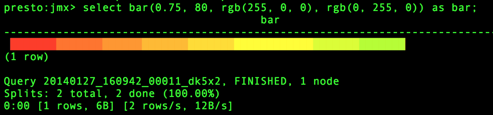

Color functions#
-
bar(x, width) varchar# Renders a single bar in an ANSI bar chart using a default
low_colorof red and ahigh_colorof green. For example, ifxof 25% and width of 40 are passed to this function. A 10-character red bar will be drawn followed by 30 spaces to create a bar of 40 characters.
-
bar(x, width, low_color, high_color) varchar Renders a single line in an ANSI bar chart of the specified
width. The parameterxis a double value between 0 and 1. Values ofxthat fall outside the range [0, 1] will be truncated to either a 0 or a 1 value. Thelow_colorandhigh_colorcapture the color to use for either end of the horizontal bar chart. For example, ifxis 0.5,widthis 80,low_coloris 0xFF0000, andhigh_coloris 0x00FF00 this function will return a 40 character bar that varies from red (0xFF0000) and yellow (0xFFFF00) and the remainder of the 80 character bar will be padded with spaces.
-
color(string) color# Returns a color capturing a decoded RGB value from a 4-character string of the format “#000”. The input string should be varchar containing a CSS-style short rgb string or one of
black,red,green,yellow,blue,magenta,cyan,white.
-
color(x, low, high, low_color, high_color) color Returns a color interpolated between
low_colorandhigh_colorusing the double parametersx,low, andhighto calculate a fraction which is then passed to thecolor(fraction, low_color, high_color)function shown below. Ifxfalls outside the range defined bylowandhighits value is truncated to fit within this range.
-
color(x, low_color, high_color) color Returns a color interpolated between
low_colorandhigh_coloraccording to the double argumentxbetween 0 and 1. The parameterxis a double value between 0 and 1. Values ofxthat fall outside the range [0, 1] will be truncated to either a 0 or a 1 value.
-
render(x, color) varchar# Renders value
xusing the specific color using ANSI color codes.xcan be either a double, bigint, or varchar.
-
render(b) varchar Accepts boolean value
band renders a green true or a red false using ANSI color codes.
-
rgb(red, green, blue) color# Returns a color value capturing the RGB value of three component color values supplied as int parameters ranging from 0 to 255:
red,green,blue.